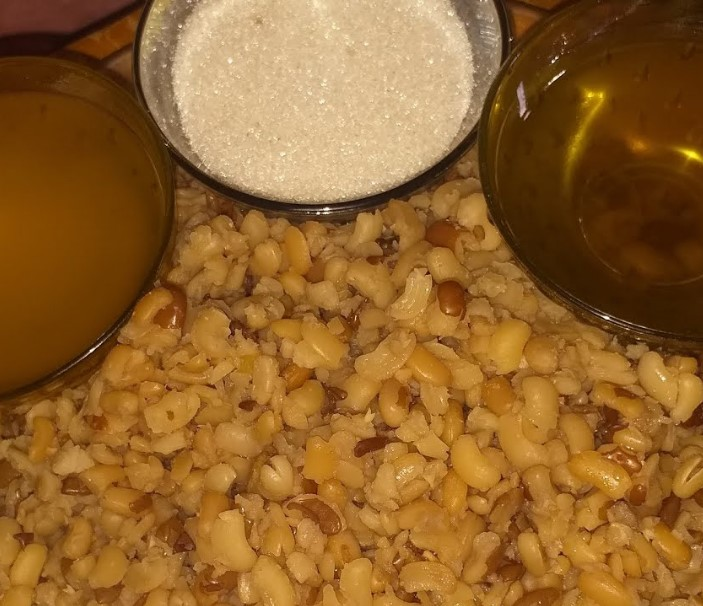

Biyaha karkari digsiga dhex dhexaad ah.
Ku dar haruurka si tartiib ah inta aad si joogto ah u walaaqayso, si aan cajiin u samaysmin.
Ku dar cusbo, sii kari 15-20 daqiiqo oo aad si fiican u walaaqayso ilaa uu dhumuc yeesho.
Haddii aad rabto macaan, ku dar caanaha,
sonkorta, iyo subagga.
Sii kari 5-10 daqiiqo oo kale ilaa uu ka gaaro isku-darka saxda ah.
U adeegso diirran, waxaana lagu darsadaa
subag iyo malab haddii aad rabto.